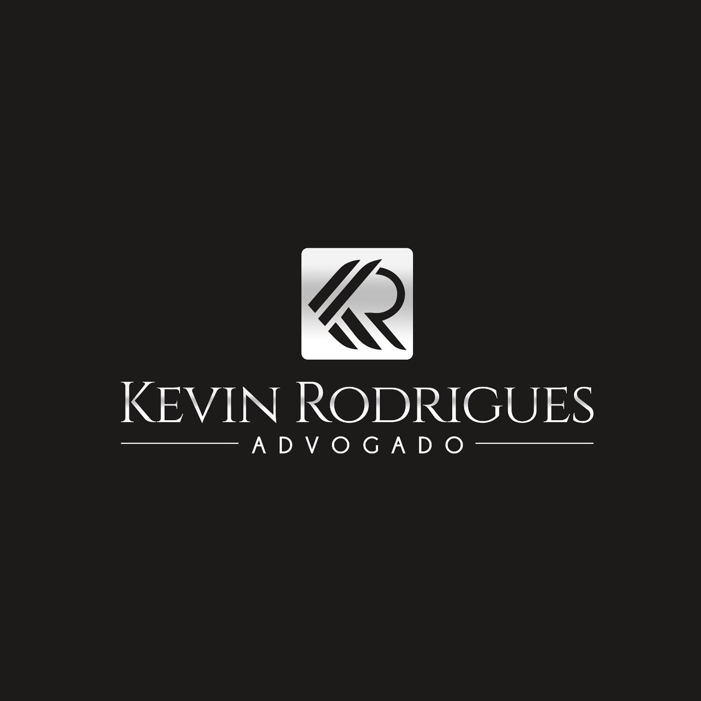
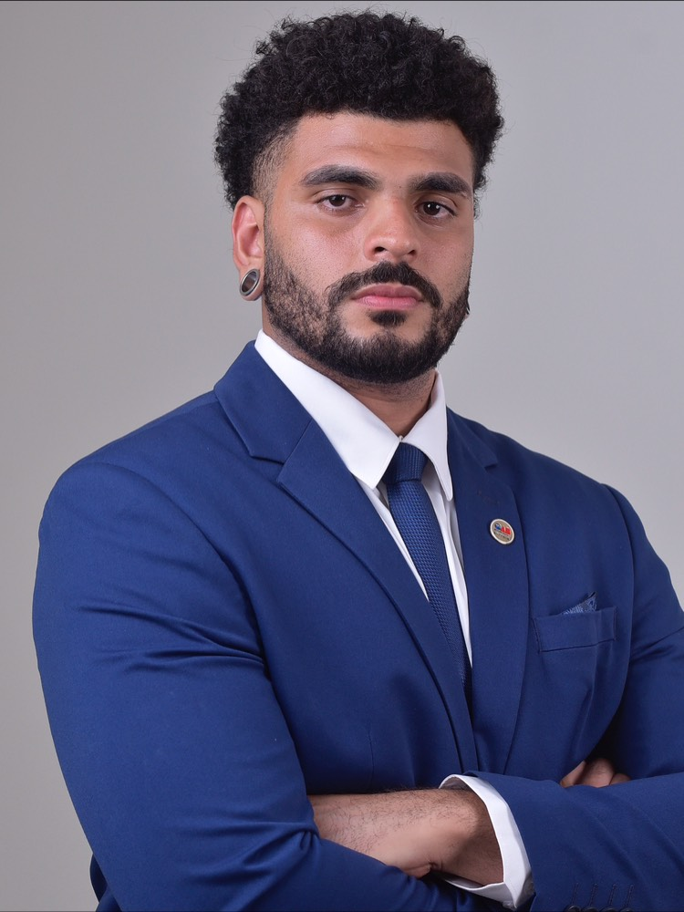

Atuação criminal séria e estratégica, do inquérito ao trânsito em julgado. Kevin Rodrigues constrói cada defesa com técnica, sigilo e presença firme em cada fase do processo.

Passe o cursor sobre cada área para ver o detalhe do que compõe a atuação.
Acompanhamento desde a fase policial, com estratégia definida antes mesmo da instauração da ação penal.
Atuação imediata nas primeiras 24 horas, buscando a soltura ou a aplicação de medidas menos gravosas.
Preparação de tese, plenário e oratória voltados a crimes dolosos contra a vida.
Medidas urgentes para reverter prisões e restrições ilegais ou desproporcionais.
Defesa em crimes cibernéticos, financeiros e de colarinho branco, com sigilo reforçado.
Progressão de regime, revisão criminal e recursos junto aos tribunais superiores.
"Toda acusação tem uma versão. A minha função é garantir que a versão da defesa seja ouvida com a mesma força."
Kevin Rodrigues atua na área criminal com foco em análise técnica do processo, atenção aos prazos e presença constante ao lado de quem está sendo acusado. Cada caso é conduzido com sigilo, clareza sobre os próximos passos e uma defesa construída sobre os fatos e o direito — sem promessas fáceis, com trabalho sério.
Informações do caso tratadas com confidencialidade em todas as etapas, da consulta inicial ao arquivamento do processo.
Atendimento prioritário em situações de urgência, como prisões em flagrante e audiências de custódia.
Cada defesa é construída caso a caso, com estudo aprofundado dos autos e das provas antes de qualquer decisão.